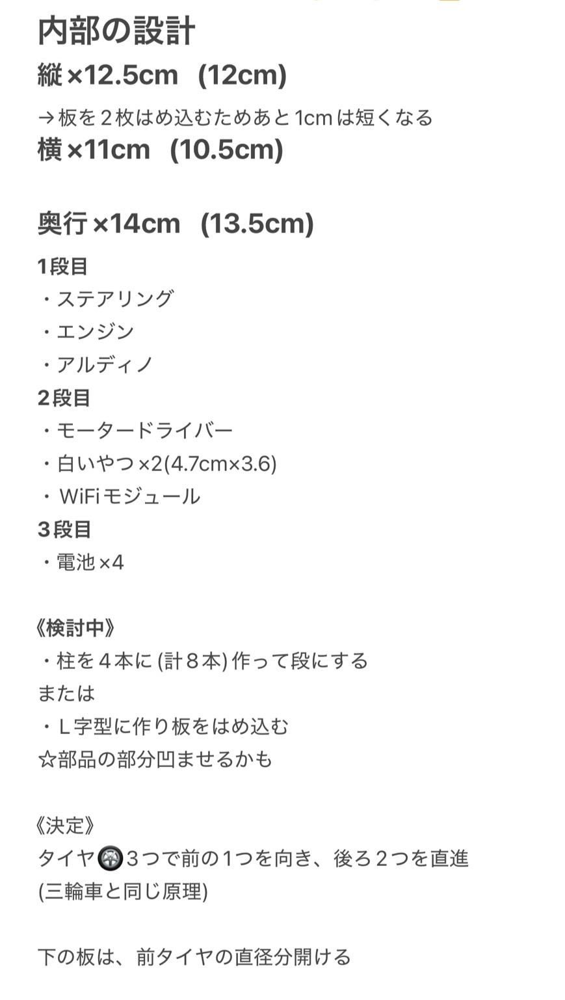

<!DOCTYPE html>
<html lang="jp"></html>
<head>
    <title>プロジェクトノート</title>
</head>
<body>
    <h1>世界一のアヒル “Project note”</h1>
    <h2>概要</h2>
    <div>アヒルを世界一にしたい！！！</div>
    <div>かわいさもあり、かっこよさもある、NO.1なアヒルをつくる“アヒル制作委員会”です。</div>
    <div>アヒルを作るため、14人がチームになってプロジェクトを開始しました！</div>
    <div>鳴き声や、横浜を歩いて探索する癒しアヒルロボットです。</div>
    <h2>プロセスメモ</h2>
    <h3>🚙チーム車</h3>
    <div>私たちは、動くためのモーターの設定と、内部の構造、動くための足（車）を作るチームです。</div>
    <div>主な担当 → 内部構造</div>
    <br>
    <div>◎内部構造が、本体が完成しないとある程度のスペースの確保が難しい</div>
    <div>構造は、最初は網目状にしようと考えていたが、固定する時を考えて、縦に穴が開いている構造にした。</div>
    <div>車の部品を付けるので、横のスペースを少し広めにとる必要がある。</div>
</body>